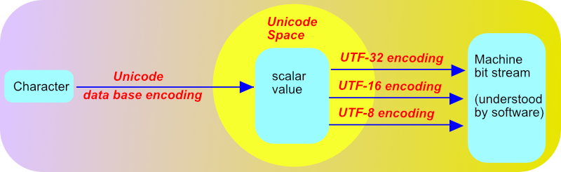

Tentacles of the enigmatic Unicode Consortium constrict the globe in their merciless grip to enforce with nefarious intent conformity of data encoding at the highest level. The consortium is thus able to control the governments and industries that rely on encoded interchange. Members recognize and communicate with each other through UTF-8 decoder rings, which appear to be completely ordinary for anyone without maleficent intent. Non members have infiltrated the Consortium with varying degrees of success. One such source, before he was eliminated by the Unicode Technical Committee, discovered the Consortium finesses its publications with great skill. Just enough is said to make it appear that the Consortium knows what it's talking about, but not so clearly that anyone actually understands. This makes the world dependent upon the normative yet inscrutable publications the Consortium releases on a well timed basis, and thus guarantees the Consortium an unprecedented degree of influence. Therefore, anyone wishing to learn Unicode must be aware of the dangers and do so at their peril.
Meouzer🙀
The three most important references follow.
Mouzer got to writing after he read these and quit coughing up hairballs.
This article is limited to introducing core concepts of Unicode Space and Space Flight. Covered are, Unicode Space as an intermediary encoding space, character encodings, surrogates, scalar values, planes, general and minor categories, types, blocks and scripts.
The year is 1963 and the cold war is red hot. President Kennedy in his speech to the German nation on June 6th declares himself to be a Jelly Donut, and the Germans go ecstatic. Not to be outdone, Kruchev declares that he has a 1,000 megaton atomic bomb, but no one really cares. Alcatraz, a federal Prison on an island in San Francisco Bay, closes because of the large number of escapes by wardens. The first push-button telephone goes into service.
In space flight, Chuck Yeager becomes the first pilot to make an emergency ejection in the full pressure suit needed for high altitude flights after getting permission from Houston over a push button telephone. The final Mercury mission, Mercury-Atlas 9 with astronaut L. Gordon Cooper on board is launched. He becomes the first American to spend more than a day in outer space. On their way down Yeager and Cooper wish each other good luck. Vostok-6 Mission Cosmonaut Valentina Tereshkova becomes the first woman in space, but ground control forgets to pack her toothbrush. Two weeks later Joseph A. Walker flies a North American X-15 to a record altitude of 106,010 meters (347,800 feet) on X-15 Flight 90, which was originally booked for thirty by Delta airlines. Exceeding an altitude of 100 km, this flight qualifies as a human spaceflight under international convention. More on international conventions later.
The Business Equipment Manufactures Association publishes the first version of the American Standard Code for Information Interchange (ASCII).
| ASCII Code Chart First Version ASCII (1963) | ||||||||
|---|---|---|---|---|---|---|---|---|
| 000 | 001 | 010 | 011 | 100 | 101 | 110 | 111 | |
| 0000 | NULL | DC0 | SP | 0 | @ | P | ||
| 0001 | SOM | DC1 | ! | 1 | A | Q | ||
| 0010 | EOA | DC2 | " | 2 | B | R | ||
| 0011 | EOM | DC3 | # | 3 | C | S | ||
| 0100 | EOT | DC4 | $ | 4 | D | T | ||
| 0101 | WRU | ERR | % | 5 | E | U | ||
| 0110 | RU | SYNC | & | 6 | F | V | ||
| 0111 | BELL | LEM | ' | 7 | G | W | ||
| 1000 | FE0 | S0 | ( | 8 | H | X | ||
| 1001 | HT/SK | S1 | ) | 9 | I | Y | ||
| 1010 | LF | S2 | * | : | J | Z | ||
| 1011 | VTAB | S3 | + | ; | K | [ | ||
| 1100 | FF | S4 | , | < | L | \ | ACK | |
| 1101 | CR | S5 | - | = | M | ] | ① | |
| 1110 | SO | S6 | . | > | N | ↑ | ESC | |
| 1111 | SI | S7 | / | ? | O | ← | DEL | |
| Control Codes | |||||
|---|---|---|---|---|---|
| Abbr | Name | Abbr | Name | ||
| NULL | Null/Idle | DC0 | Device control (reserved for data link escape) |
||
| SOM | Start of Message | DC1 | Device control | ||
| EOA | End of Address | DC2 | Device control | ||
| EOM | End of Message | DC3 | Device control | ||
| EOT | End of Transmission | DC4 | Device control (STOP) | ||
| WRU | Who are you? | Err | Error | ||
| RU | Are you ...? | SYNC | Synchronous idle | ||
| BELL | Audible signal | LEM | Logical end of media | ||
| FE0 | Format effector | Sn | Separator information | ||
| HT/SK | Horizontal Tab/ Skip (punch card) | ACK | Acknowledge | ||
| LF | Line Feed | ① | Unassigned Control | ||
| VTAB | Vertical Tab | ESC | Escape | ||
| FF | Form Feed | DEL | Delete/Idle | ||
| CR | Carriage Return | ||||
| SO | Shift Out | ||||
| SI | Shift In | ||||
ASCII was developed with computers, their peripherals, and telecommunications in mind by the ASA-X3 space flight committee because flying an ASA-X3 is just too problematic and they needed something better to do. To understand the need for ASCII see the short article Debut of ASCII. If you want, see Tom Jenning's amazing history on the predecessors of ASCII An annotated history of some character codes. After ASCII but before Unicode there have been hundreds of codes.
ASCII is a coded character set or more simply a code. A coded character set is a specific set of machine-bit patterns, which both specific graphic and control meanings have been assigned. Any of the bit patterns in the set is called a bit code. ASCII is a 7-bit code because every one of its bit codes has exactly 7 bits.
According to Mackenzie's Coded Character Sets, History and Development, control refers to a particular function or operation that controls hardware or software products of systems. He lists a few types of controls. Format effectors control the formatting of data on a printed page, or on a display. Information separators separate and block data. Device controls control actions within a device. Transmission controls control intercommunications on data transmission lines. Mode changes are functions to set or change some particular mode of operation. Then there are miscellaneous controls not listed in any of these categories. Understanding ASCII Codes indicates how control codes might be entered via keyboard in a later version of ASCII.
In 1963, byte had a different meaning than it does today. In a 7-bit code such as ASCII, a byte was 7 bits. In a 5-bit code such as ITA2, a byte was 5 bits. Once the innumerable 8-bit codes started to rule two things happened. (1) The definition of a byte permanently became 8-bits (unless codes are in context). (2) Hexadecimal notation was invented to abbreviate bit patterns in the code charts.
In both ASCII and Unicode the basic types of characters, to be sent to machines or software in encoded form that machines or software can understand, are listed as follows.
The character Latin LATIN CAPITAL LETTER A (as in Unicode) or more simply A (as in ASCII) to be sent to machine(as in ASCII) or software (as in Unicode), must be encoded into a stream of bits: shown as the first arrow in the two diagrams above.
In ASCII, you read the ASCII code chart to get the encoding. So the encoding of A in machine bits is the 7-bit stream 1000001. Since 1000001 is the encoding of a character it is called an encoded character. It is the encoding of A. Because binary streams are hard to read, hexadecimal notation was invented. 1000001 in hexadecimal is 0x41, which is much easier to read.
In Unicode, you read the Unicode database to get the encoding. So open up the Unicode Data Base and scroll down to LATIN CAPITAL LETTER A, in the second column, and refer to the first column, to see that it is encoded as 0x0041, which is just shorthand for the actual binary stream 1000001 that it represents.
In ASCII, the encoded character is sent to the machine as is. So the machine gets the stream 1000001, knows what to do with it, and displays the letter A in some way.
In Unicode, the encoded characters is further encoded into another bit stream, by one of the encodings UTF-32, UTF-16, or UTF-8 to get a final encoding, which is what the machine gets. Since machines don't understand Unicode, the job of the machine is to transmit the final encoding to software, which does understand Unicode.
A code space is simply a range of integers (representing binary streams) that contains all the encoded characters.
The ASCII (1963) code space consists of the range 0000000 to 1111111, which is 0x00 to 0x41 or 0 to 127. The range is usually notated as [0x00, 0x41] or [0,127]. The encoding of every character lies in this range.
The Unicode code space, or more simply Unicode space is [0x0000, 0x10FFFF]. This is so large that a ton of characters can be encoded, including all the characters in all the alphabets of all languages in the world, and more. More Unicode characters are added the Unicode database all the time.
Members of a code space are called code points. For example 110000 = 0x30 is an ASCII (1963) code point but it is not an encoded character. No ASCII (1963) character has 0x30 as its encoding. Also 1000001 = 0x41 is a ASCII code point, which is an encoded character. It is the encoding of the letter A.
| Partition of Unicode space [0x0000, 0x10FFFF] into BMP, Surrogate, and Astral Code Point Ranges |
|||
|---|---|---|---|
| BMP Code Points [0x0000, 0xFFFF] |
Low BMP Code Points | [0x0000, 0xD7FF] | |
|
Surrogate Code Points [0xD800, 0xDFFF] |
High Surrogate Code Points | [0xD800, 0xDBFF] | |
| Low Surrogate Code Points | [0xDC00, 0xDFFF] | ||
| High BMP Code Points | [0xE000, 0xFFFF] | ||
| Astral Code Points [0x10000, 0x10FFFF] |
Astral Plane 1 | [0x10000, 0x1FFFF] | |
| Astral Plane 2 | [0x20000, 0x2FFFF] | ||
| ... | ... | ||
| Astral Plane 9 | [0x90000, 0x9FFFF] | ||
| Astral Plane 10 | [0xA0000, 0xAFFFF] | ||
| Astral Plane 15 | [0xF0000, 0xFFFFF] | ||
| Astral Plane 16 | [0x100000, 0x10FFFF] | ||
Unicode space is the set of integers from 0x0000 to 0x10FFFF inclusive, and may be denoted as [0x0000, 0x10FFFF] since square brackets denote inclusivity of endpoints.
The members of Unicode space are Unicode numbers as a factual statement, but they are officially called code points. So a code point is nothing more than an integer in the range [0x0000, 0x10FFFF].
Unicode space [0x0000, 0x10FFFF] is divided into 17 planes [0xN0000, 0xNFFFF], where the zero based index N from 0 to 16 is to be replaced by its hexadecimal digit(s).
Plane 0 or [0x0000, 0xFFFF] is the most important plane and is called the Basic Multilingual Plane. It's where the most common scripts are placed. The most important partition of Unicode Space is seen in the table above.
To avoid ambiguity with integers in general, Unicode notation, which is the convention, may be used. That is the hexadecimal prefix 0x is replaced with U + to denote the Unicode context. So the code point U + FFAC is the integer 0xFFAC in Unicode context. Unicode space itself is [U + 0000, U + 0FFFF]. Plane 0, or the Basic Multilingual Plane is [U + 0000, U + FFFF].
An character is an abstract/logical unit of "textual" information used for the organization, control or representation of textual data.
A mapping of a set of characters to a code space is called an encoding. The result of encoding an character is called its encoded character. A coded character is always a scalar value but there will be scalar values that are not coded characters.
In Unicode, the set of characters that it uses is called the set of Unicode characters and the code space is Unicode space = [U + 0000, U + 10FFFF]. The Unicode characters together with their encoded characters are listed in the database.
A scalar value is a code point that is not a surrogate. Referring to the partition of Unicode space above, this means a scalar value is any code point outside the range [0xD800, 0xDFFF].
The mathematics required for UTF-16 requires that encoded characters be scalar values, i.e., ever character encodes as a scalar value. Unicode itself insures that encoded characters are always scalar values. When a new character is entered into the database Unicode will always encode it as a scalar value. Surrogates are not scalar values and so will never be entered into the database as the encoding of an character.
Unicode space is a virtual intermediary encoding space between characters and bits of machine code because it sits dab in the middle of two encodings required to send a character to a machine bit stream: the first encoding is the database encoding; the second encoding is the UTF-32 encoding, the UTF-16 encoding, or the UTF-8 encoding. 
Come back to this picture after you read the next section about the Unicode database.
Each record of the Unicode Data Base contains fifteen fields, separated by semicolons, but we are primarily interested in the first three fields.
The first field of the database is the encoded character as a hexadecimal digit. The second or eleventh field is the name of the Unicode character which it encodes, and the third field is the general category of the abstract character. Both Unicode abstract characters and coded characters will occur exactly once in the database, together in pairs.
| Unicode Database entry | Encoded Character |
Character | Category | Glyph (if any) |
| 0040;COMMERCIAL AT;Po;0;ON;;;;;N;;;;; | U + 0040 | COMMERCIAL AT | Po | @ |
|---|---|---|---|---|
| 12422;CUNEIFORM NUMERIC SIGN FIVE GESHU;Nl;0;L;;;;5;N;;;;; | U + 12422 | CUNEIFORM NUMERIC SIGN FIVE GESHU | Nl | 𒐢 |
| 1F638;GRINNING CAT FACE WITH SMILING EYES;So;0;ON;;;;;N;;;;; | U + 1F638 | GRINNING CAT FACE WITH SMILING EYES | So | 😸 |
| 22FF;Z NOTATION BAG MEMBERSHIP;Sm;0;ON;;;;;Y;;;; | U + 22FF | Z NOTATION BAG MEMBERSHIP | Sm | ⋿ |
A glyph is a visual representation an abstract character. Most but not all Unicode abstract characters have visual representations. Format and control characters have no visual representation.
For example, the code point U + 0040 encodes the character named COMMERCIAL AT and the glyph is @. The category is Po, which stands for Punctuation Other.
U + 12422 encodes CUNEIFORM NUMERIC SIGN FIVE GESHU, which has category Nl for Number letter.
U + 1F638 encodes GRINNING CAT FACE WITH SMILING EYES of category So for Symbol other.
U + 22FF encodes the character Z NOTATION BAG MEMBERSHIP, which has category Sm for Symbol math.
Imagine combining the following tables into one. We can't because the result wouldn't fit on the page.
| General Category | Minor Category | Abbreviation |
| Letter | uppercase | Lu |
|---|---|---|
| lowercase | Ll | |
| titlecase | Lt | |
| modifier | Lm | |
| other | Lo | |
| Mark | nonspacing | Mn |
| spacing combining | Mc | |
| enclosing | Me | |
| Number | decimal digit | Nd |
| letter | Nl | |
| other | No | |
| Punctuation | connector | Pc |
| dash | Pd | |
| open | Ps | |
| close | Pe | |
| initial quote (may behave like Ps or Pe depending on usage) | Pi | |
| final quote (may behave like Ps or Pe depending on usage) | Pf | |
| other | Po |
| General Category | Minor Category | Abbreviation |
| Symbol | math | Sm |
|---|---|---|
| currency | Sc | |
| modifier | Sk | |
| other | So | |
| Separator | space | Zs |
| line | Zl | |
| paragraph | Zp | |
| Other | control | Cc |
| format | Cf | |
| surrogate | Cs | |
| private use | Co | |
| not assigned (including noncharacters) | Cn |
| Basic Type | Brief Description | General Category | Character Status |
Code Point Status |
| Graphic | Letter, mark, number, punctuation, symbol, and spaces |
L, M, N, P, S, Zs | Assigned to character |
Designated (assigned) code point |
| Format | Invisible but affects neigh- boring characters; includes line/paragraph separators |
Cf, Zl, Zp | ||
| Control | Usage defined by protocols or standards outside the Unicode Standard |
Cc | ||
| Private-use | Usage defined by private agreement outside the Unicode Standard |
Co | ||
| Surrogate | Permanently reserved for UTF-16; restricted inter -change |
Cs | Cannot be assigned to character |
|
| Noncharacter | Permanently reserved for internal usage; restricted interchange |
Cn | Will never be assigned to character |
|
| Reserved | Reserved for future assign- ment; restricted inter- change |
Cn | Not assigned to character |
Undesignated (unassigned) code point |
Lets see what information is gleaned from these two tables for the code point U + 22FE. Open the Unicode Data Base and scroll down to 22FE in the first column. Its character is SMALL CONTAINS WITH OVERBAR, and its category is Sm. S is the general category and from the basic type table we know 22FE encodes a graphic character. Form the general and minor category tables we know the graphic character is a math symbol.
Control Codes. Sixty-five code points [U+0000, U+001F] and [U+007F, U+009F] are defined specifically as control codes for compatibility with the C0 and C1 control codes of the ISO/IEC 2022 framework. A few of these control codes are given specific interpretations by the Unicode Standard.
| Control Codes Specified/Understood by the Unicode Standard | ||
|---|---|---|
| Code Point | Abbreviation | ISO/IEC 6429 Name |
| U+0009 | HT | character tabulation (tab) |
| U+000A | LF | line feed |
| U+000B | VT | line tabulation (vertical tab) |
| U+000C | FF | form feed |
| U+000D | CR | carriage return |
| U+001C | FS | information separator four |
| U+001D | GS | information separator three |
| U+001E | RS | information separator two |
| U+001F | US | information separator one |
| U+0085 | NEL | next line |
The corresponding Unicode database records follow. The eleventh field gives the ISO/IEC 6429 Name.
What's interesting for example is that from the database there is no way to tell that the code point 0009 is understood by Unicode. You actually have to read the Unicode Standard and look for the needle in the haystack to tell.
The designated use of private use code points, is for private use by parties outside the standard. Two or more parties by mutual agreement may decide to assign these code points to their own abstract characters, not necessarily recognized by anyone else.
| Private Use Code Points by Plane | |||
|---|---|---|---|
| Containing Plane | Range | Name | Contains |
| BMP (plane 0) | [U + E000, U + F8FF] | Primary Private Use Area Reference | 6,400 private use characters. |
| plane 15 | [U + F0000, U + FFFFD] | Supplementary Private Use Area-A Reference | 65,534 private use characters |
| plane 16 | [U + 100000, U + 10FFFD] | Supplementary Private Use Area-B | 65,534 private use characters |
The Surrogate category is permanently reserved for UTF-16; restricted interchange. This means that use of code points in Cs have a designated purpose only in the UTF-16 encoding scheme. UTF-16 unlike UTF-8 or UTF-32 will map surrogates to machine bits.
This is the category of scalar values that have not been assigned to a character. You will never find a code point of category Cn in the database.
There are two reasons why a Cn code point is not assigned.
| Reserved Code Points by Plane | ||
|---|---|---|
| index | name | Reserved code points |
| Plane 3 to Plane 13 | Unassigned Supplementary Planes | All code points are reserved except for the last two which are noncharacters |
| Planes 15 and 16 | No W3 official Name | Contain no reserved code points |
| All other planes | Various names | All code points which have not been assigned |
While you will never find a code point of category Cn in the database, all noncharacters and reserved code points will occur in the code charts. In the code charts, noncharacters are indicated with a totally black field, while a reserved code point is indicated with a diagonal pattern.
A block is a range of Unicode code points, thematically that are related in serving a common purpose. See Blocks.txt to get a list of all the blocks and their ranges.
Scroll down till you see the Ethiopic block, which is [U + 1200, U + 137F] Scroll down a little bit further till you see the Ethiopic Supplement block, which is [U + 1380, U + 139F]. You can find the specifics of these blocks by looking at the Scripts Organized By Block page. Open the Ethiopic Supplement block and you will see the code point U + 1380 is assigned to the character ETHIOPIC SYLLABLE SEBATBEIT MWA whose glyph is ᎀ. Shaded cells indicate that the code point has not be assigned to a character, i.e., the code point is not the encoding of any character. So for example U + 1390 is a code point that has not been assigned to a character.
Unicode space is divided into 17 planes [U + 0xN0000, U +0xNFFFF], where
N is to be replaced by the hexadecimal digits of an integer between 0 = 0X0
and 16 = 0x10.
| The 17 Unicode Planes | |
|---|---|
| Index | Range |
| 0 |
Basic Multilingual Plane (BMP)[U + 0000, U + FFFF] Contains the vast majority of coded characters including all the most common ones. Prior to Unicode 3.1, no characters were encoded in any other plane. |
| 1 | Supplementary Multilingual Plane (SMP) [U + 10000, U + 1FFFF]
Contains characters from archaic or obsolete writing systems. Used by those who study these systems. Various specialized collections of symbols will also go into this plane. |
| 2 | Supplementary Ideographic Plane (SIP)[U + 20000, U + 2FFFF]
SIP is an extension of the CJK Area from the BMP to contain rare and unusual Chinese characters. |
| 3-13 |
Unassigned Supplementary Planes [U + 30000, U + 3FFFF] to [U + D0000, U+ DFFFF]
All code points in each plane has category Cn. In each plane all code points are reserved except for the last two which are noncharacters. |
| 14 |
Supplementary Special Purpose Plane (SSP) [U + E0000, U + EFFFF] Reserved for special-purpose characters that don't encode characters as such but are used by higher level protocols or as signals to processes operating on Unicode text. §2.8 𝕡 45The Supplementary Special-purpose Plane (SSP, or Plane 14) is the spillover allocation area for format control characters that do not fit into the small allocation areas for format control characters in the BMP. (Here format control character is a synonym for format character) Only a small handful of code points in this plane are listed in the Unicode database. They all have general category Cf or Mn, except for the last two which are non characters. |
| 15 |
Supplementary Private Use Area (SPUA-A) [U + F0000, U + FFFFF]
An extension of the private use area of the BMP.
All code points in this plane, except for the last two, |
| 16 |
Supplementary Private Use Area (SPUA-B) [U + 100000, U + 10FFFF]
Another extension of the private use area of the BMP.
All code points in this plane has category |
Planes other than the BMP are supplementary or astral planes. Any code point in one of these planes is an astral code point.
Approved big-time readings of the Meouzer consortium.
A character block or more simply block is a named range of code points used for organization. They are named after the general types of characters they encode. Blocks are 16 bit aligned and do not overlap. Almost always there is no space between consecutive blocks. The BMP and SMP each have one exception. The third plane has six blocks with spaces between all consecutive blocks. Blocks are normatively defined at Blocks.txt
Blocks won't contain surrogates since surrogates do not encode characters. For the same reason, blocks won't contain noncharacters. They also do not overlap with private use areas.
Blocks are used to organize the following.
Unicode scripts are normatively defined: See List of Scripts categorized by type of writing system. A script is a collection of characters from a writing system(s) or notational system. In order for it to include a number of writing systems, the systems must be closely related.
The blockbuster movie where the unsuspecting occupants of flight 227 are terrorized by animate blocks, with Decepticon like capabilities and attitudes, devishly placed by a member of the Unicode consortium. The consortiure misfortunately leaves himself on board, but makes do by sabotaging the efforts of the passengers to save themselves from the Decepticons without the aid of the usual Autobot protagonists. All the highly annoying passengers meet gruesome fates as they did something untoward to deserve it. The remaining passengers pull themselves together and throw the consortiure off the plane in a brilliant and dramatic maneuver. The Decepticons are disabled by a precocious child with a Phillips screwdriver whose insatiable curiosity wants to know if they contain jelly beans. On the ground, in the aftermath of their peril, the children of Mr. and Mrs. Smith are ecstatic that their separated parents after relying on each other begin to realize that they still belong together.